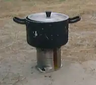
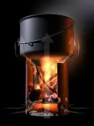
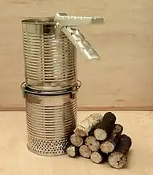
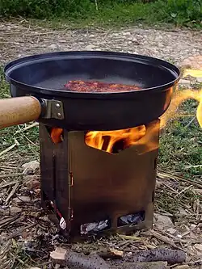
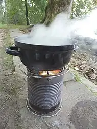

Hobokocher

mit aufgesetztem Kochtopf
Ein Hobokocher, auch Hobo-Ofen, ist ein kleiner, transportabler Ofen, der mittels des Kamineffekts funktioniert und als Feuer- und Kochstelle eingesetzt wird. Solche Geräte sind nach den Hobos, nordamerikanischen Wanderarbeitern, vor allem während der großen Depression, benannt. Eine Variante des Hobokochers wird von Hand als Einzelstück oder in Kleinstserie aus einer leeren Konservendose hergestellt, indem Löcher für Luftzufuhr und Brennstoff-Nachschub in die Wand der Dose geschnitten oder gebohrt werden. Heute wird die Bezeichnung „Hobokocher“ auch für industriell gefertigte Trekking-Holzkocher verwendet, die ebenfalls den Kamineffekt nutzen, jedoch meist völlig anders konstruiert sind.
Die althergebrachte Methode, zwischen drei oder mehr Steinen ein offenes Feuer zu entfachen und darüber ein Kochgefäß zu stellen oder aufzuhängen, ist im Vergleich zum Hobokocher weniger effektiv, denn so erhitzt nur ein Teil der Wärme das Gefäß. Durch den Einsatz einer Brennkammer und die Nutzung des Kamineffekts wie bei Hobokochern wird die Hitze des Feuers auf den Boden des Kochgefäßes konzentriert, was die benötigte Menge an Brennstoff deutlich reduzieren kann.
Aufbau und Funktion


Ein Hobokocher besteht aus einem hohen, unten offenen Metallgefäß, das als Brennraum und Topfträger dient. Der Boden des Gefäßes hat Löcher, durch die aufgrund des Kamineffekts Luft angesaugt wird. Der Kocher ist am wirkungsvollsten, wenn der Brennstoff auf einem Rost aus Draht oder gelochtem Blech liegt. Ansonsten liegt der Brennstoff auf dem Boden, auf dem auch der Kocher steht. Rauch und Abgase verlassen das Gefäß über Abzugsöffnungen am oberen Rand. In der Regel ist der Hobokocher oben offen und erhitzt ein aufgestelltes Kochgefäß. Bei dem improvisierten Konservendosenkocher kann der Boden der kopfstehenden Dose direkt als Garfläche dienen.
Die Metallwandungen des Kochers verhindern die Abstrahlung der Wärme eines darin betriebenen Feuers; gleichzeitig erhöht der Kamineffekt die Luftzufuhr. Im Hobokocher verbrennen auch kleine Mengen Brennmaterial vollständig und bei hoher Temperatur. Die Leistung selbst kleiner Hobokocher kann je nach verwendetem Brennstoff deutlich über den Durchschnittswerten von tragbaren Spirituskochern (ca. 1000 Watt)[1] liegen – jedoch unter denen von Gaskochern (≥ 2000 W)[2] und Benzinkochern (durchschnittlich ca. 1500 W).[3] Wie bei allen offenen Kochern, die ohne integrierten oder separaten Windschutz betrieben werden, kann Wind die nutzbare Leistung stark verringern.
Typische Brennmaterialien sind Totholz, Reisig, Zapfen von Nadelbäumen und brennbare Abfälle. Selbst feuchtes oder morsches Holz kann zugegeben werden, mindert jedoch die Leistung. Außer in Wüsten und Hochgebirgen ist Brennstoff in freier Landschaft nahezu überall verfügbar. Hobokocher mit geschlossenem Boden oder einem entsprechenden Einsatz können auch mit Flüssigbrennstoffen betrieben werden. Um Stichflammen und Verpuffungen zu vermeiden, sollten stark flüchtige Brennstoffe wie Spiritus oder Benzin in einer Schicht aus Sand gebunden werden. Die Variante für Flüssigbrennstoffe wird auch als Bengasi-Kocher bezeichnet; der Name entstand in der britischen Armee im Zweiten Weltkrieg während des Nordafrika-Feldzugs.
Top-lit updraft gasifier stove (TLUD)
Eine fortschrittlichere Variante des Hobokochers funktioniert nach dem Prinzip der Holzvergasung (englisch: Top-lit updraft gasifier stove; eine feststehende deutschsprachige Bezeichnung dafür hat sich nicht etabliert): Eine unten und unter dem oberen Rand mit Löchern versehene Brennkammer befindet sich dabei in einer äußeren Umhüllung, die am unteren Rand Zuluftlöcher besitzt. In der Brennkammer brennt der Brennstoff nur mit geringer Leistung von oben nach unten ab, der unter der Brennzone befindliche Brennstoff wird hauptsächlich durch die Hitzeeinwirkung pyrolysiert. Die dabei freiwerdende Verbrennungswärme sowie die bei der exothermen Pyrolyse entstehende Reaktionswärme wärmen die Luft zwischen Brennkammer und äußerer Umhüllung vor, die dann durch die seitlichen Löcher am oberen Rand in die Brennkammer eintritt und die Pyrolysegase und den freigesetzten Feinstaub mit Luftüberschuss verbrennt. Da sich dabei die eintretende Luft zunächst mit der sauerstoffarmen resultierenden Gasatmosphäre über dem Brennstoff vermischt und dadurch eine brennbare Gasmischung erzeugt, sieht das so aus, als ob Gasflammen aus den Löchern in die Brennkammer eintreten – tatsächlich handelt es sich dabei aber nur um erwärmte Luft. Oberhalb der Brennkammer entsteht dadurch bei angepasster Luftzumischung eine große, raucharm, ruhig und gleichmäßig und sehr heiß brennende Flamme, die nur sehr wenig Ruß und andere schädliche Emissionen erzeugt. Gegen Ende des Pyrolysevorgangs befindet sich in der Brennkammer hauptsächlich Holzkohle.
In Entwicklungsländern wird diese dann dem Kocher entnommen, abgelöscht und verkauft. Deshalb sind diese fortschrittlichen Kocher dort sehr beliebt, denn sie sparen nicht nur Brennstoff ein, sondern finanzieren sich auch aus den Einnahmen vom Holzkohleverkauf. Man kann diese Kohle mit neuem Brennstoff vermischen und so durch Verbrennung ebenfalls energetisch nutzen, oder man kann sie unverbrannt entnehmen und beispielsweise zerkleinert in Gartenerde einarbeiten, um die CO2-Emissionen aus der Verbrennung zu reduzieren und somit Kohlenstoff zu deponieren.
Durch das Pyrolysesprinzip können in diesen Holzgasöfen auch problematische Brennstoffe wie z. B. Plastikabfälle oder feuchtes Holz und Laub verwendet werden, die sonst im Feuer stark qualmen und unangenehme Gerüche verursachen würden. Im Gegensatz zum einfachen Hobokocher geht die über die Wand der Brennkammer abgegebene Wärme auch nicht vollständig verloren, sondern wärmt die daran vorbeiströmende Verbrennungsluft vor und kommt auf diesem Wege wieder der Flamme zugute. Dadurch verbessert sich nicht nur das Emissionsverhalten, sondern steigt auch noch die Energieeffizienz des Gerätes, zudem können minderwertigere Brennstoffe eingesetzt werden.
Solche Geräte werden kommerziell produziert und beispielsweise als leichte, tragbare Holzvergaser-Campingkocher vertrieben, sie können aber auch recht unaufwendig aus ineinandergestecken leeren Konservendosen improvisiert werden und sind daher geeignet, in einem bereits eingetretenen Katastrophenfall als Notkocher mit irgendwelchen gerade vorhandenen festen Brennstoffen, z. B. Siedlungsabfälle aus dem Hausmüll, verwendet zu werden.
Kritik und Gefahrenhinweise
TLUD stoves sind oft so ausgelegt, dass die benutzten Kochgeschirre von wabernden Flammen umlodert werden, was Anbieter und Käufer anscheinend als Qualitätsmerkmal auffassen. Tatsächlich ist das Brennstoff- bzw. Energieverschwendung, weil ein großer Teil der Verbrennungswärme dabei ungenutzt freigesetzt wird. Zudem werden teilweise unverbrannte Verbrennungsgase durch den Kontakt mit dem relativ kalten Kochgeschirr abgeschreckt, wodurch es stark verrußt. Die großen, lodernden Flammen entstehen durch zu große Primärluftöffnungen, die eine zu starke Pyrolysereaktion bewirken, und zu wenig Sekundärluft für eine vollständige Verbrennung der Pyrolysegase. Eine Abhilfe kann in der Verkleinerung der Primärluftöffnungen, z. B. durch aufgelegte Dosenblechstücke, bestehen.
Übliche und auch käufliche TLUDs werden allseitig sehr heiß, es kann auch unten heiße Asche und Glut herausfallen. Dadurch besteht zum einen Verletzungsgefahr, zum anderen können sie die Standfläche verkohlen und Brände verursachen. Die häufig recht unvollständige Verbrennung kann in erheblichem Maße Feinstaub und giftige Rauchgase freisetzen. Deswegen sind die Geräte zur Benutzung in Innenräumen ungeeignet.
Schließlich ist das Sammeln von Brennholz aus der Natur oft verboten, ebenso das Entzünden von offenem Feuer. Kommerzielle TLUDs werden häufig ohne adäquate Betriebsanleitung, die die Funktion und den richtigen Gebrauch erläutert und die erforderlichen Hinweise auf davon ausgehende Gefahren sowie geltende Verbote gibt, geliefert.
Moderne Hobokocher
Im Zuge des Outdoor-Booms wurden kommerzielle Varianten des Selbstbaukochers produziert. Sie sind meist falt- oder zerlegbar und aus rostfreiem Stahlblech oder Titan. Besonders kompakte Ausführungen sind zum Rucksack-Trekking geeignet, Holzöfen von Eimergröße eignen sich zum Kanuwandern und für PKW-Reisen.
Eine Weiterentwicklung des Hobokochers ist der Rocket Stove, bei dem die Brennkammer thermisch isoliert ist, was ebenfalls zu einer Reduktion des Brennstoffbedarfs gegenüber einer offenen Feuerung ohne Verkleidung führt.
Einsatz beim Trekking


Wie das offene Kochfeuer erspart ein Hobokocher auf Reisen vor allem das Mitführen von Brennstoff. Er braucht weniger und anspruchsloseres Brennmaterial bei gleichzeitig höherer Leistung. Hobokocher können daher interessant sein für Reisen
- mit besonders langer Autonomie,
- in Regionen mit wenig käuflichen fossilen Brennstoffen,
- mit ausgiebigem Kocherbetrieb (Schnee schmelzen, Trinkwassersterilisation, Heizung, Licht).
Typische Nachteile sind unter anderem
- das oft hohe Gewicht zumindest käuflicher Kocher,
- die meist durch Naturschutz- und Brandschutzvorschriften beschränkte Einsetzbarkeit,
- die hartnäckige Verunreinigung von Kochgeschirr und anderer Ausrüstung durch Ruß und Rauch,
- die Untauglichkeit in großen Höhen,
- Gefahr durch Verbrennungsprodukte beim Einsatz im Zelt.
Der Betrieb von Holzkochern in der Natur wird vereinzelt weniger streng gesehen als der eines klassischen Lagerfeuers, es gelten aber grundsätzlich dieselben Gefahren, dieselben Vorsichtsmaßnahmen und eine besondere Verantwortung des Betreibers. Der Naturschutz gebietet insbesondere, den Untergrund gegen Versengen zu schützen und Verbrennungsrückstände (Asche, Ruß) zu beseitigen. Wo knappes Totholz ein wertvolles Biotop darstellt oder Einheimischen als Brennstoff dient, sollte auf Holzfeuer verzichtet werden.
Einsatz in der Entwicklungshilfe
In vielen Entwicklungsländern sind Kochfeuer noch stark verbreitet, zum Beispiel in Form einer offenen Feuerstelle mit drei Steinen, auf denen der Topf oder Tonkrug platziert wird. Die geringe Energieeffizienz dieser Anordnung führt zu einem hohen Brennstoffverbrauch, was die Holzbestände gefährdet. Hobokocher, aus Blechresten oder alten Fässern vor Ort gebaut, können den Holzeinschlag verringern. Außerdem kann die Gesundheitsgefährdung durch dreckige Öfen verringert werden.[4] Um diese Verhaltensänderung beim Kochen zu begleiten, werden Akzeptanzprogramme durchgeführt.[5]
Siehe auch
- Dasselbe Prinzip nutzt der Anzündkamin zum schnellen und einfachen Entzünden von Grillkohle. Die meisten Anzündkamine sind auch als Hobokocher verwendbar, allerdings auf Reisen etwas unhandlich.
- Esbitkocher
Weblink
- Zen Stoves – (englisch) Information zu Holz- und anderen Kochern
Einzelnachweise
- ↑ Als Beispiel: Spirit Burner B25, in: Trangia – The Handbook, S. 21. Trångsviken, Schweden 2022 (engl.) – der angegebene Wert gilt für die Verwendung von Brennspiritus mit einem Alkohol-/Ethanolgehalt von 96 % bei Außentemperaturen über ca. 8 °C
- ↑ Gas Burner GB 74 – ebd., S. 23
- ↑ Multifuel Burner X2 – ebd., S. 25
- ↑ Frisierte Windräder und aufgebohrte Öfen. In: Der Spiegel vom 18. Mai 2007, abgerufen am 7. August 2011.
- ↑ Studie über traditionelle Kochverfahren in Burkina Faso (französisch; PDF; 615 kB).
- Gargerät
- Outdoor-Ausrüstung
- Feuer in der Technik
- Ofen